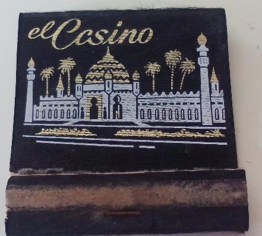

Un día mas de servicio.Mis aventuras diarias
Un día más en esta ciudad, con sus cosas buenas y sus cosas malas
Para esas cosas malas estoy yo, frenando el crimen, sea cual sea, sin tener miedo.
Iba por la autopista y recibi la llamada que un coche de gama alta se habia estrellado. ¡sospechoso!
Una vez que estaba ante el siniestro, mi olfato me dijo que era mas sospechoso.Um no se trataba de un accidente normal.
Un coche de lujo, abandonado,umm
Abro el portamaletas y voila un cadaver.
Empiezo a buscar alguna prueba , y encuentro tres objetos que me dan la pista del asesino o asesinos
Tres cosas , solo tres cosas :
-
 Cerillas de un club -
PenDrive -
Tarjeta de un club
Pienso y pienso, el escenario es muy reciente y tengo que encontrar al asesino antes de que el día acabe.
Tres pistas,¿cual es la pista que me llevara a resolver el caso?
Conociendo el crimen en esta ciudad cada pista me abre dos caminos